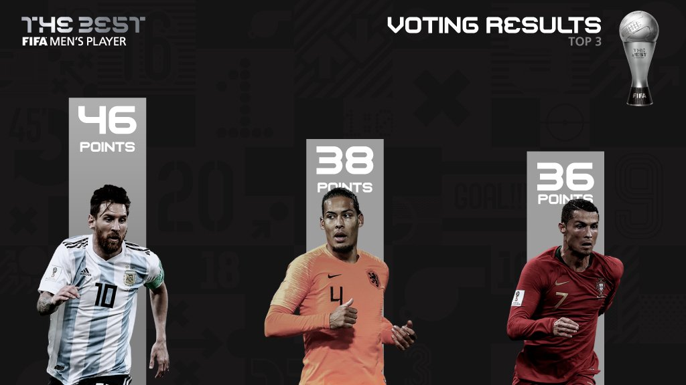
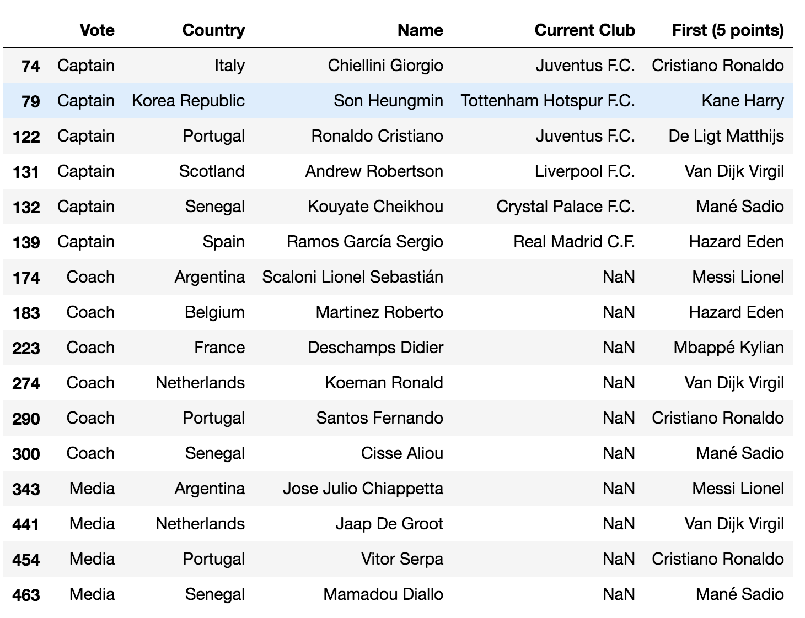
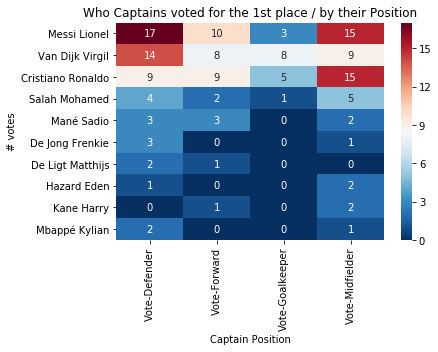

반다이크는 왜 메시를 넘지 못했나
(이미지 출처: Etsuo Hara/Getty Images)
The Best FIFA Men’s Player
며칠전 FIFA에서 2018/19 시즌에서 축구를 가장 잘한 선수/감독을 뽑는 The Best FIFA Football Awards를 열었다. 올해에는 재밌는 관전 포인트가 많았는데, 특히 리버풀의 챔스 우승에 결정적인 기여를 한 버질 반다이크의 1위 가능성이 주목받았다. 그동안 상을 독식해오던 메시와 호날두의 시대가 저물고 뉴페이스가 탄생할 것인가!
하지만 아쉽게도 9월 23일 밀라노에서 발표된 최종 승자는 메시. 메시는 총 46점으로 1등을 차지했고, 뒤이어 기대를 모은 반다이크가 38점, 개인적으로는 잘 모르겠는 호날두가 36점으로 뒤를 이었다.

(출처: FIFA)
챔스 우승에다 네덜란드 대표팀에서 엄청난 경기력을 보여주는 반다이크. 그에 비해 메시는 리버풀 원정에서 4:0으로 진 기억이 먼저 떠오르는데다, 호날두는.. 최근 퍼포먼스 + 노쇼 논란 등으로 왜 3등으로 올라왔는지 모르겠다는 반응이 많다.
어제 올라온 이스타tv 영상에서는 국대 주장들이 관성적으로 호날두를 찍었기 때문에 등수가 높게 나오지 않았을까 하고 추측하는 부분도 있었다.
그래서 궁금해졌다. 대체 피파 올해의 선수는 어떤 기준으로 뽑는걸까?
대체 어떤 기준으로 뽑는걸까?
위키피디아 페이지 (https://en.wikipedia.org/wiki/The_Best_FIFA_Football_Awards_2019)를 가면 맨 하단 Reference 부분에서 투표 룰과 부분적인 데이터를 얻을 수 있다. 피파 공홈에서 링크를 잘 만들어놓으면 좋을텐데 없어서 한참 뒤졌다.
- 투표 방식: https://resources.fifa.com/image/upload/the-best-fifa-men-s-and-women-s-player-and-coach-awards-rules-of-allocation.pdf?cloudid=swunljn2kbv1nfrtjapa
- 주장/감독/미디어 투표 로데이터: https://img.fifa.com/image/upload/z0gygcuwnxuz6pimfuhm.pdf
투표 방식을 간단히 요약하자면 다음과 같다.
- 베스트 선수 투표는 선정 위원회에서 최종적으로 선택한 최후의 10인을 대상으로 한다.
- 메시, 반다이크, 호날두, 살라, 마네, 음바페, 아자르, 데 용, 데 리트, 케인
- 투표는 국대 주장 / 국대 감독 / 미디어 / 팬 이렇게 4가지 그룹으로 나누어 수행한다.
- 미디어는 피파에서 선정하는 것고, 팬은 피파에 회원가입한 사람들을 대상으로 미리 투표를 진행했다.
- 각 투표자는 총 3명에 투표할 수 있으며, 5점, 3점, 1점으로 차등적으로 점수를 매긴다.
- 예를 들어 메시 5점, 호날두 3점, 반다이크 1점
- 투표가 끝나면 각 그룹별로 선수별 점수를 계산하여 순위를 매긴다.
- 순위별로 다음의 점수를 부여한다. (동률인 경우 5점이 많은 선수를 우위로 본다)
- 1등 - 12점
- 2등 - 10점
- 3등 - 8점
- 4등 - 7점
- 5등 - 6점
- 6등 - 5점
- 7등 - 4점
- 8등 - 3점
- 9등 - 2점
- 10등 - 1점
- 네 그룹의 점수를 모두 합하여 최종 점수를 내고 이를 바탕으로 최종 순위를 결정한다.
- 네 그룹에서 모두 1등하면 48점, 모두 꼴지하면 4점을 얻게 된다.
- 네 그룹에서 모두 1등하면 48점, 모두 꼴지하면 4점을 얻게 된다.
압도적 메시, 미디어가 밀어준 반다이크, 여전한 팬층을 가진 호날두
로데이터가 pdf로 깔끔하게 공개되어 있어서 한번에 끝날거라 생각했으나, 팬 투표 결과가 빠져있다. 그래서 로데이터를 내려받아 pandas로 가공하여 팬을 제외한 중간 점수를 집계하고, 이를 최종 결과에서 빼서 팬 투표 결과를 역으로 산출해보았다.
선수별 득표 현황을 그룹별로 나눠보면 다음과 같다.

정렬 순서는 최종 득표 순위다. 재밌는 점이 몇 개 보인다.
- 미디어는 반다이크를 사랑했다. 메시를 제치고 가장 높은 점수를 줬다.
- 국대 주장들도 반다이크를 밀어줬지만, 감독과 팬들이 호날두를 조금 더 선호했다.
- 음바페는 감독들이 좋아하지만, 아직 스타성은 부족한 듯 하다.
- 유벤투스 적응에 힘들어하는 데 리트는 언론의 평가가 앞서는 듯 하다.
- 해리 케인은.. 차라리 안들어갔으면 나았을건데 ㅠ
같은 편 밀어주기 아닐까?
이번 시상에는 올해의 선수 말고도 베스트 11도 선정했다. 여기에 풀백으로 마르셀루…가 들어가는 바람에 인기투표 아니냐! 라는 말들도 나오고 있다. 올해의 선수 투표는 앞서 설명한 것처럼 국가별로 최대한 배분을 많이 해놨기 때문에 같은 나라, 같은 팀 선수 밀어주기의 효과가 약할 듯 하나.. 실제로 데이터를 살펴보면 어떨까?
투표 로데이터에는 주장/감독/미디어 기자들의 국적 정보가 있다. 국적이 같은 선수를 추천하면 같은 편 밀어주기로 판정하여 이를 점수 계산에서 제외해보면 어떨까? 국적 정보 외에도 선수들의 현재 소속 클럽 정보도 구글링하여 같은 방식으로 제외했다.

같은 편 밀어주기로 의심되는 첫번째 추천들
밀어주기로 의심되는 투표는 5점에서 16건, 3점에서 2건, 1점에서 8건이 발견되었다. 점수에 가장 많은 영향을 줄 수 있는 5점에서 가장 많은 16건이 나왔다는게 웃기다. 축구선수들도 별 수 없구나. 특히 2번째 줄에 우리흥의 사회생활이 잘 드러난다.
그런데 재밌는 점은, 밀어주기가 전반적으로 나타나서인지 누구 한명이 특혜를 입기보다 두루두루 밀어주는 바람에 자극적인 결론이 나오지 않는다. 날두에 대한 조직적인 밀어주기가 보였다면 재밌었을텐데 아쉬움.
그래서 그런지 이 밀어주기 투표를 제외하고 다시 점수를 내봐도 순위가 1도 달라지지 않는다. 밀어주기 표도 얼마 없는데다 (총 1506표 중 26표: 1.7%) 누구에게 쏠린 것도 아니어서, 그룹별 순위에 기반해 점수 산정을 하는데 영향을 주지 못했다.
수비수라면 반다이크 뽑아야지!
마지막으로 주장들의 플레이 포지션이 투표와 어떤 관련이 있는지 살펴보자. 위키피디아에서 주장들의 이름을 검색하면 이들의 포지션(Forward, Midfielder, Defender, Goalkeeper)이 나온다. 주장들의 주 포지션과 이들이 첫번째로 누구를 투표했는지 살펴보자.

- 제일 재밌는 결과가 나왔다! 노가다 크롤링을 한 보람이 있다.
- 수비수는 반다이크를 뽑긴 했지만 메시를 가장 많이 뽑았다. 메시가 축신이라 그럴수도 있겠지만, 수비수 입장에서 상대해보니 경외를 느껴서일까? 다른 어떤 포지션보다 수비수들의 메시표가 많았다.
- 반다이크는 수비수보다 골키퍼들의 선택을 많이 받았다. 반다이크 같은 선수가 센터백 위치에서 골문을 한번 막아주면 골키퍼 입장에서는 참 편하고 든든하겠다.
- 공격수들은 메시나 호날두에 몰표를 던지지 않을까 했는데 오히려 그러한 경향은 미드필더에서 나타난다. 수비수-메시처럼 공격수들이 반다이크를 상대해보니 그런걸까. 미드필더들은 메시와 호날두로 양분되었다. 둘다 패스와 돌파에 도가 텄으니 패스 주고받는 입장에서는 그보다 나은 동료를 바라기 어려울 듯도 싶다.
반다이크는 왜 메시를 넘지 못했나?
이번 포스팅에서는 FIFA World Best Player 2019의 투표 데이터를 가지고 놀아봤다. 개인적으로는 반다이크가 메날두 시대의 막을 내리길 바랬는데, 메시의 아성은 여전히 높았다. 왜 반다이크는 메시를 넘지 못했을까? 리그 우승을 했다면 조금 더 가능성이 있었겠지만, 투표에서 보여지듯 메시에 대한 선수들, 감독들, 팬들의 지지는 여전히 강하다. 이제 선수로서 황혼기에 접어드는 메시가 내년에도 세계 최고의 선수로 선정될 수 있을까? 반다이크는 올해의 모멘텀을 19/20 시즌까지 이어갈 수 있을까? 해축 보는 맛에 산다.